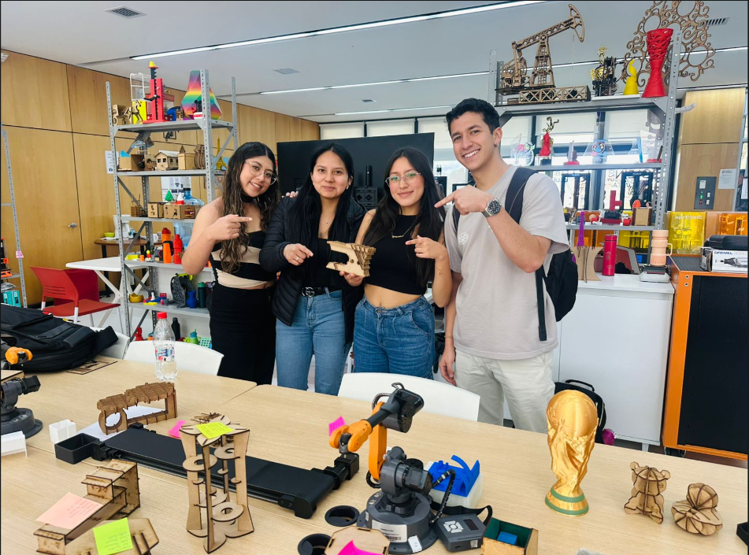

Integration of all skills learned during the first academic cycle
The following section presents the Midterm Examination, which consisted of the integration of all the skills, methodologies, and technical knowledge learned throughout the first academic cycle.
During this evaluation, multiple competencies were applied, including statistical analysis, product development methodologies, data visualization, digital prototyping, and presentation of results through interactive tools.
The purpose of this exam was to demonstrate the ability to combine theoretical and practical knowledge into a complete and functional project development process.

Below is a video showing the development process and execution of the midterm examination.
The following videos show the design and assembly process carried out during the midterm examination project development.
The midterm examination represented a comprehensive integration of the knowledge acquired throughout the academic cycle.
This project allowed the development of technical, analytical, and creative skills while reinforcing teamwork, research methodologies, and technological implementation.
The experience demonstrated the importance of combining engineering, design, and data analysis to create innovative and functional solutions.
You can download the supporting documents related to the midterm examination below: